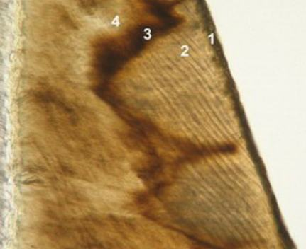
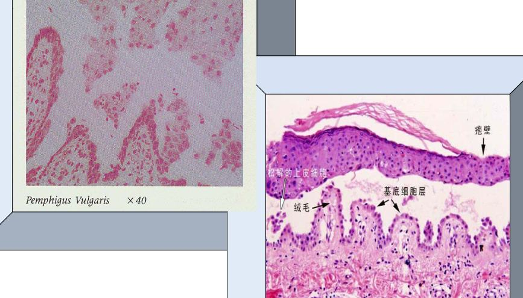
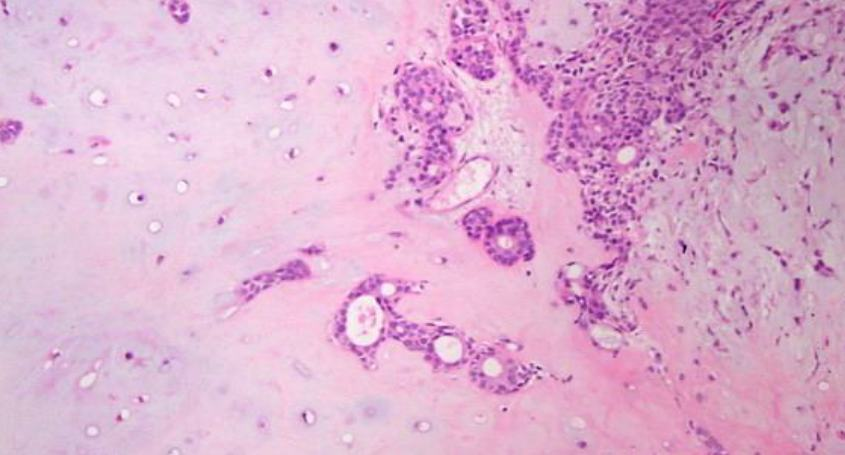

切片辨认
先说标本来自哪里，再指两处结构，最后说诊断。每个答案可回到教师课件整页。
实验四 · 课件第 5 页

这一视野属于哪一种龋？病变的三角形朝向是怎样的？
核对课件
釉质平滑面龋
纵切面三角形，基底部—釉质表面，顶—釉牙本质界
查看课件原页与图注
实验五 · 课件第 44 页

这一视野的诊断是什么？图中标注了哪些结构？
核对课件
天疱疮
Pemphigus Vulgaris ×40
查看课件原页与图注
实验六 · 课件第 25 页

这一视野的诊断是什么？可见哪些结构？
核对课件
多形性腺瘤
多形性腺瘤：腺管样结构和黏液软骨样组织
查看课件原页与图注
闭卷辨别：同一张片上的线索
先说区分依据再展开。括号内是学习通节号和课件阅读版页码。
龈沟上皮和结合上皮都可无角化，凭什么分？
先找牙面和龈沟。龈沟上皮覆盖龈沟软组织壁；结合上皮向根方延伸，借内基底板及半桥粒附着于牙面。若看不见牙与上皮的关系，只凭“无角化”不足以定位。
牙周组织 · 4.1，第 19、22–23 页；章末第 83 页
硬腭和口底都取到复层鳞状上皮，接下来找什么？
看表层角化，再看组织与深面的连接。硬腭承担摩擦，属于咀嚼黏膜；口底需要伸展，属于被覆黏膜。舌背另列特殊黏膜，辨认时要找乳头或味蕾。
口腔黏膜 · 5.1，第 3、40–41 页
腮腺、下颌下腺、舌下腺怎样用同一条线索比较？
先判腺泡分泌性质。腮腺为纯浆液性；下颌下腺为以浆液性腺泡为主的混合腺；舌下腺也为混合腺，黏液性腺泡占多数。再观察导管和间质，为第一判断找第二条证据。
唾液腺 · 6.1，第 59、67、74 页
融合牙和结合牙，最有区分力的是牙数还是连接组织？
先看连接组织。融合牙来自两个牙胚联合，可见牙本质相连；结合牙的连接限于牙骨质。涉及额外牙胚时，单纯数牙不能可靠区分。
牙发育异常 · 7.1，第 28、96 页
筛孔样肿瘤细胞团与含牙冠的囊腔，各要再找什么？
前者找肿瘤细胞团内的筛孔和腔内物质，支持腺样囊性癌的筛状结构；后者要确认囊壁附着在未萌牙牙颈部。前一问主要考细胞排列，后一问还要结合牙冠和囊壁的空间关系。
唾液腺肿瘤 · 14.1，第 81 页 · 颌骨囊肿 · 15.1，第 8–11 页
为什么观察到转移，还要描述细胞异型性？
课件将组织学貌似良性却发生转移的成釉细胞瘤，与出现明显细胞异型、核分裂增多的成釉细胞癌分开。答题时把临床行为和镜下证据写成两句，再说明哪条证据支持分型。
牙源性肿瘤续篇 · 17.1 第一份，第 66–68 页
复习侧重
优先练 · 作业和切片同时出现
龋病与牙髓根尖周病、牙周炎、黏膜病、唾液腺病、囊肿及牙源性肿瘤。把每个诊断写成“部位＋可见结构＋最接近的鉴别点”。
每天保留一组 · 正常组织与发育
第五章和第六章各有 10 道已完成作业。暑假材料还练牙胚来源、牙体组织、填空、名解和简答。先从正常结构出发，避免只会认异常图。
实验四至九 · 64 张切片与抽背卡 牙源性肿瘤 · 25 张专项卡
两套切片有重叠，分开计数。实验九总结过的内容适合先练；期末各章分值尚未公布。课程“牙源性角化囊性瘤”等旧称按原目录显示，切片台也用“牙源性角化囊肿”。
课件明确要求掌握什么
按首批 10 份教师课件的 PDF 物理页核对。课件使用的“掌握、熟悉、了解”和章末思考题分别标出，方便安排背诵顺序。
颌面部发育 · 当前课件第 4、60 页（旧版第 9、70 页）
掌握神经嵴、鳃弓、咽囊，以及面部与腭的形成和常见畸形。自测时画出面突、写衍生结构，再反推融合障碍。舌发育列在“熟悉”。
牙的发育 · 第 3–4 页
掌握牙胚组成、组织来源和去向，蕾状期、帽状期、钟状期的结构，牙根形成和三种上皮的来源、位置及结局。矿化与萌出次序列在“了解”。
牙体组织 · 第 3–4 页
第 3 页将釉质组织及表面结构、牙本质、牙髓、牙骨质的组织结构列入掌握。用一张牙纵切图逐一定位，再说三种硬组织和一种软组织的临床意义。
龋病 · 第 2 页
掌握釉质龋与牙本质龋的病理变化；熟悉病因、发病机制和四联因素；了解菌斑形成。优先画出两种龋的分层，分别指出进展前沿。
牙髓及根尖周病 · 第 48、98 页
章末思考题要求描述急、慢性牙髓炎的形态，并区分坏死与坏疽；根尖周部分追问急性炎症、排脓途径、肉芽肿、慢性脓肿和囊肿。这两页属于思考题。
牙周组织病 · 第 3、102 页
掌握牙周炎的病理发展过程及改变；熟悉病因、发病机制与牙龈病特点。章末用“牙周袋怎样形成”把发展过程连回切片。
口腔黏膜病（一）、（二）· 各第 2 页
先掌握基本病变，再逐一比较白斑、黏膜下纤维化、扁平苔藓、盘状红斑狼疮、天疱疮与类天疱疮。复发性阿弗他溃疡的病理和常见临床表现列在“熟悉”。
颌骨疾病 · 第 1 页
掌握不同类型骨髓炎、纤维结构不良与骨化纤维瘤的区别、朗格汉斯细胞组织细胞增生症的病理表现。复述时分别报告骨与纤维成分、病变边界和主要细胞。
唾液腺非肿瘤性疾病 · 第 3 页
掌握急慢性唾液腺炎与舍格伦综合征的病理变化；熟悉病因和发病因素。由腺泡、导管、炎细胞三处分别作答。
牙周组织 · 4.1 / 第 3、83 页
掌握牙龈、牙周膜、牙槽骨的组织结构。按章末思考题比较牙龈上皮、龈沟上皮和结合上皮，再说明主纤维束的功能。
口腔黏膜、唾液腺 · 5.1、6.1 / 各第 3 页
掌握黏膜基本结构、咀嚼与被覆黏膜的区别；掌握腺体基本结构及各大唾液腺的识别依据。先观察上皮或腺泡，后命名器官。
牙发育异常 · 7.1 / 第 96 页
课件章末用融合牙与结合牙、氟斑牙、遗传性乳光牙及四环素牙出思考题。分别问哪种组织受累、发生在什么阶段、镜下如何解释。
唾液腺肿瘤 · 14.1 / 第 3 页
课件要求掌握五类肿瘤的病理和生物学特点。把多形性腺瘤、腺淋巴瘤、腺样囊性癌、黏液表皮样癌、恶性多形性腺瘤列成五行，逐项遮答。
颌骨囊肿 · 15.1 / 第 2 页
掌握常见牙源性发育性囊肿的病理和常见软组织囊肿的特征；熟悉组织来源、临床与生物学特点。切片能回答衬里，定位还需牙位与影像。
牙源性肿瘤 · 16.1 / 第 2 页
课件明确要求连起临床表现、病理改变、生物学行为和组织发生。每次说出一种镜下形态，再解释它能支持什么、还缺什么。
牙源性及其他来源肿瘤 · 17.1
这一个节点实际有两份课件。第一份继续牙源性病变，第二份讲其他组织来源的病变。结合实验七、八区分影细胞、钙化和浸润性鳞状上皮巢。
逐章复习大纲
每项先做一个闭卷问题，再展开核对。章序沿用学习通；书页按对应版本标注。
01 颌面部发育
本章教师资料
上唇与腭分别由哪些突起参与形成？
用两幅草图分开画。上唇涉及上颌突与内侧鼻突；继发腭由两侧腭突形成。再说出融合障碍对应的裂隙位置。
第3版 PDF 28–49
课程原目录 · 第一章 口腔颌面部的发育
02 牙及支持组织发育
本章教师资料
牙胚三部分各留下什么？
成釉器→釉质；牙乳头→牙本质、牙髓；牙囊→牙骨质、牙周膜和牙槽骨。画完再解释牙本质形成与釉质形成的先后。
第3版 PDF 50–85；暑假简答 2
课程原目录 · 第二章 牙齿发育
03 牙体组织
本章教师资料
面对磨片，怎样区分釉质、牙本质、牙骨质？
先定位冠、根、髓腔。釉质看釉柱，牙本质找小管，牙骨质沿根面找；无细胞牙骨质也属于牙骨质。补读牙髓各层。
第3版 PDF 88–131；暑假选择 1–7
课程原目录 · 第三章 牙体组织
- 3.1 牙体组织ppt
- 3.2 牙釉质理化特性
- 3.3 牙本质理化特性
- 3.4 牙釉质的组织结构
- 3.5 牙本质的组织结构
- 3.6 牙骨质结构
04 牙周组织
本章教师资料
牙如何把咬合力传到牙槽骨？
从牙骨质，经嵌入两端的牙周膜主纤维束连至牙槽骨；按牙槽嵴、水平、斜行、根尖和根间分组。再从牙龈结合上皮定位附着。
第3版 PDF 132–149、246–269；暑假选择 8–10
课程原目录 · 第四章 牙周组织
- 4.1 牙周组织ppt
- 4.2 牙龈表面解剖
- 4.3 牙龈组织结构
- 4.4 牙周膜
- 4.5 牙槽骨
05 口腔黏膜
本章教师资料
对应作业
硬腭和颊黏膜在承受摩擦时，哪一层不同？
硬腭和牙龈为咀嚼黏膜，通常有角化；颊部为被覆黏膜。沿基底层、棘层、颗粒层到角化层辨认，最后单列舌背特殊黏膜。
第3版 PDF 150–171；第五章作业
课程原目录 · 第五章 口腔黏膜
- 5.1 5.口腔黏膜PPT
- 5.2 5.1口腔黏膜组织结构
- 5.3 5.2口腔黏膜分类、结构特点、功能
06 唾液腺
本章教师资料
对应作业
看见深染腺泡就能确定是腮腺吗？
先辨浆液性与黏液性腺泡，再看全片比例和导管。腮腺为纯浆液性；下颌下腺混合、浆液性为主；舌下腺混合、黏液性为主。
第3版 PDF 172–183；第6章作业；实验九
课程原目录 · 第六章 唾液腺
- 6.1 6.唾液腺PPT
- 6.2 6.1唾液腺的一般组织学结构
- 6.3 6.2唾液腺的分类及结构特点，增龄与再生性变化
07 牙发育异常
本章教师资料
对应作业
牙齿变色时，怎样从受累组织反推发育阶段？
区分釉质形成量不足与矿化或成熟障碍；四环素牙的主要受累组织为牙本质。赫钦森切牙与桑葚状第一磨牙配对记。
第八章作业 1–10；平台 7.1
课程原目录 · 第八章 牙发育异常
08 龋病
本章教师资料
对应作业
平滑面釉质龋哪个区最深，哪个区脱矿最多？
从表面向深部依次辨表层、病损体部、暗层、透明层；体部脱矿最重，透明层为病损前沿。再与沿牙本质小管扩展的龋损对照。
第3版 PDF 194–245；第九章作业 4–6；实验四
课程原目录 · 第九章 龋病
- 8.1 9.龋病PPT
- 8.2 9.1龋病概述
- 8.3 9.2龋病的病因
- 8.4 9.3龋病的分类
- 8.5 9.4釉质龋概述
- 8.6 9.5平滑面龋
- 8.7 9.6牙本质龋+牙骨质龋
09 牙髓病与根尖周病
本章教师资料
对应作业
镜下都有炎细胞，靠什么区分脓肿、肉芽肿、囊肿？
脓腔以中性粒细胞和液化坏死为线索；根尖肉芽肿见炎性肉芽组织；具有上皮衬里的囊腔支持根尖周囊肿。单见上皮团不足以认定囊肿。
第3版 PDF 194–245、411–426；第十、十一章作业；实验四
课程原目录 · 第十章牙髓病(1)第十一章根尖周病(1)
- 9.1 10. 牙髓病(1)11.根尖周病(1)PPT
- 9.2 10.1急性牙髓炎
- 9.3 10.2慢性牙髓炎
- 9.4 11.1急性根尖周炎
- 9.5 11.2根尖肉芽肿
- 9.6 11.3根尖周脓肿
- 9.7 11.4根尖周囊肿
10 牙周组织病
本章教师资料
对应作业
龈袋与牙周袋如何用附着位置区分？
龈肿胀可增加探诊深度；牙周炎还要找附着丧失、结合上皮向根方迁移与牙槽骨吸收。画出釉牙骨质界作参照。
第3版 PDF 246–269；第十二章作业；实验四
课程原目录 · 第十二章 牙周组织病
- 10.1 12.牙周组织病PPT
- 10.2 12.1牙周组织病概述
- 10.3 12.2牙龈炎
- 10.4 12.3牙周炎病因及发病机制
- 10.5 12.4牙周炎病理
- 10.6 12.5 发生在牙周组织的其他病变
11 黏膜基本病变与白斑
本章教师资料
白色病损的临床描述与病理描述如何分开？
先描述角化层厚度及角化类型，再辨上皮异常增生。白斑是临床诊断，组织学可表现为不同程度的角化或异常增生。
第3版 PDF 270–308；平台 11.2–11.5；实验五
课程原目录 · 第十三章 口腔黏膜病（一）
- 11.1 13.口腔黏膜病(一)ppt
- 11.2 13.1口腔黏膜病基本病理变化1
- 11.3 13.2口腔黏膜病基本病理变化2
- 11.4 13.3口腔黏膜病病理活检
- 11.5 13.4白斑
12 黏膜病鉴别
本章教师资料
对应作业
疱在上皮内还是上皮下？哪种病以界面炎为主？
寻常型天疱疮见棘层松解和上皮内疱；黏膜类天疱疮多见上皮下裂隙。扁平苔藓看基底细胞液化和固有层浅层带状淋巴细胞浸润。
第3版 PDF 270–308；第十三章（二）作业；实验五
课程原目录 · 第十三章 口腔黏膜病（二）
- 12.1 13.口腔黏膜病（二）PPT
- 12.2 13.5口腔黏膜下纤维化
- 12.3 13.6扁平苔藓
- 12.4 13.7慢性盘状红斑狼疮
- 12.5 13.8天疱疮
- 12.6 13.9良性黏膜类天疱疮
- 12.7 13.10复发性阿弗他溃疡
- 12.8 13.11红斑（补充内容）
13 颌骨与非肿瘤性唾液腺病
本章教师资料
对应作业
小叶里有淋巴细胞就能定舍格伦综合征吗？
同时观察浸润分布、腺泡萎缩、残余导管及淋巴上皮病变。颌骨部分另列骨髓炎、纤维结构不良、朗格汉斯细胞组织细胞增生症。
第3版 PDF 318–399；第十四章/第十六章（一）作业；实验六、八
课程原目录 · 第十四章颌骨疾病(1)第十六章唾液腺疾病（一）(1)
- 13.1 14.颌骨疾病(1)16.唾液腺疾病(1)PPT
- 13.2 14.1颌骨骨髓炎
- 13.3 14.2纤维结构不良
- 13.4 14.3朗格汉斯细胞组织细胞增生症
- 13.5 16.1唾液腺炎
- 13.6 16.2舍格伦综合征
14 唾液腺肿瘤
本章教师资料
对应作业
多形性腺瘤、沃辛瘤和两种常见癌怎样分？
多形性腺瘤看上皮成分及黏液软骨样间质；沃辛瘤看双层嗜酸性上皮和淋巴间质；腺样囊性癌找筛状区，黏液表皮样癌辨三类细胞。
第3版 PDF 318–375；第十六章（二）作业；实验六、九
课程原目录 · 十六章唾液腺肿瘤
- 14.1 十六章唾液腺疾病(二)PPT
- 14.2 16.3组织发生学
- 14.3 16.4多形性腺瘤
- 14.4 16.5warthin瘤
- 14.5 16.6腺样囊性癌
- 14.6 16.7黏液表皮样癌
- 14.7 16.8恶性多形性腺瘤
- 14.8 16.9腺泡细胞癌
- 14.9 16.10免疫组化在唾液腺肿瘤中的应用
15 颌面部囊肿
本章教师资料
对应作业
同是上皮衬里的囊腔，为什么还要看它与牙的关系？
含牙囊肿围绕未萌牙冠，附着于釉牙骨质界；根尖周囊肿结合无活力牙根尖定位。鼻腭管囊肿可在囊壁见神经血管束；黏液外渗型通常无上皮衬里。
第3版 PDF 411–426；第十七章作业；实验八
课程原目录 · 十七章口腔颌面部囊肿
- 15.1 十七章口腔颌面部囊肿PPT
- 15.2 17.1含牙囊肿
- 15.3 17.2非牙源性囊肿
- 15.4 17.3鳃裂囊肿和甲状舌管囊肿
- 15.5 17.4皮样囊肿
- 15.6 17.5黏液囊肿
16 牙源性肿瘤
本章教师资料
对应作业
怎样从细胞岛边缘和中心识别滤泡型成釉细胞瘤？
外围细胞栅栏状排列并可见核极性倒置；岛中央细胞疏松似星网状层。与丛状型的吻合上皮索比较，再看棘皮瘤型中央的鳞状化生。
第3版 PDF 427–448；实验七、九；牙源切片台
课程原目录 · 十八章牙源性肿瘤
- 16.1 十八章牙源性肿瘤PPT
- 16.2 18.1成釉细胞瘤1
- 16.3 18.2成釉细胞瘤2
- 16.4 18.3成釉细胞瘤3
- 16.5 18.4成釉细胞瘤4
- 16.6 18.5牙源性角化囊性瘤
- 16.7 18.6牙源性腺样瘤
17 其他牙源性及黏膜肿瘤
本章教师资料
对应作业
影细胞、同心圆钙化、角化珠各把你带向哪一组病变？
影细胞联系牙源性钙化囊肿；淀粉样物质和同心圆钙化联系牙源性钙化上皮瘤；见角化珠时继续找浸润性上皮巢，判断鳞癌。
第3版 PDF 411–476；第十八、十九章作业；实验七至九
课程原目录 · 第十八章牙源性肿瘤和瘤样病变十九章口腔颌面部其他组织来源的肿瘤和瘤样病变
- 17.1 十八章牙源性肿瘤和瘤样病变PPT十九章口腔颌面部其他组织来源的肿瘤和瘤样病变PPT
- 17.2 18.7牙源性钙化囊性瘤
- 17.3 18.8牙源性钙化上皮瘤
- 17.4 18.9牙瘤
- 17.5 18.10成釉细胞纤维瘤
- 17.6 19.1乳头状瘤
- 17.7 19.2血管瘤
- 17.8 19.3牙龈瘤
- 17.9 19.4口腔癌
18 实验四
本章教师资料
打开实验切片台
遮住病名后，先确定硬组织、牙髓还是根尖周。
各选一张釉质龋、牙髓炎、根尖周病、牙周炎；说位置、主要结构、支持诊断的改变，再翻课件。
切片台 · 实验四，42 页课件 / 12 卡
课程原目录 · 实验四 龋病，牙髓病，根尖周病，牙周组织病
- 18.1 课件
- 18.2 实验目的
- 18.3 龋病
- 18.4 牙髓病
- 18.5 根尖周病
- 18.6 牙周组织病
19 实验五
本章教师资料
打开实验切片台
把上皮内疱、上皮下疱和带状浸润分成三组。
每组挑一张，看上皮和固有层交界，再追问白斑与扁平苔藓的组织学差别。
切片台 · 实验五，50 页 / 14 卡
课程原目录 · 实验五口腔黏膜病
- 19.1 课件
- 19.2 (实验目的，内容，要求)口腔黏膜下纤维化
- 19.3 白斑
- 19.4 扁平苔藓
- 19.5 慢性盘状红斑狼疮
- 19.6 天疱疮
- 19.7 良性黏膜类天疱疮(补充)
20 实验六
本章教师资料
打开实验切片台
哪张图更支持沃辛瘤，而非多形性腺瘤？
先说上皮，再说间质；接着用三类细胞与筛孔结构区分黏液表皮样癌和腺样囊性癌。
切片台 · 实验六，56 页 / 19 卡
课程原目录 · 实验六唾液腺疾病
- 20.1 课件
- 20.2 实验目的，内容，要求唾液腺疾病
- 20.3 慢性唾液性炎
- 20.4 舍格伦综合征
- 20.5 多形性腺瘤
- 20.6 腺淋巴瘤
- 20.7 黏液表皮样癌
- 20.8 腺样囊性癌
21 实验七
本章教师资料
打开实验切片台
把同一肿瘤的不同组织型从不同肿瘤中分开。
先认成釉细胞瘤三种形态，然后用影细胞、淀粉样物质、腺管样结构分别做鉴别。
切片台 · 实验七，46 页 / 10 卡
课程原目录 · 实验七牙源性肿瘤
- 21.1 课件
- 21.2 实验目的、内容、要求
- 21.3 成釉细胞瘤（滤泡型）
- 21.4 成釉细胞瘤（丛状型）
- 21.5 成釉细胞瘤（棘皮瘤型）
- 21.6 牙源性钙化上皮瘤
- 21.7 牙源性腺样瘤
- 21.8 牙源性角化囊性瘤
- 21.9 牙源性钙化囊性瘤
22 实验八
本章教师资料
打开实验切片台
看到纤维组织或鳞状上皮，下一眼应看哪里？
先找骨小梁、囊壁或基底膜，分别回答纤维骨性病变、囊肿及鳞癌浸润的问题。
切片台 · 实验八，26 页 / 6 卡
课程原目录 · 实验八颌骨疾病、口腔颌面部囊肿及其他肿瘤和瘤样病变
- 22.1 课件
- 22.2 实验目的，内容，要求
- 22.3 骨纤维结构不良
- 22.4 根尖周囊肿
- 22.5 鳃裂囊肿
- 22.6 鳞状细胞乳头状瘤
- 22.7 鳞癌1级
- 22.8 鳞癌Ⅱ级
23 实验九
本章教师资料
打开实验切片台
拿总结片混考，能否在命名之外说出两条可指认结构？
复看多形性腺瘤、沃辛瘤、鳞癌、成釉细胞瘤和正常下颌下腺。正常腺体可回平台 23.6；原页未印病名的卡只记录所见。
切片台 · 实验九，8 页 / 3 卡；平台 23.1–23.6
课程原目录 · 实验九切片总结
- 23.1 课件
- 23.2 实验目的内容
- 23.3 多形性腺瘤、腺淋巴瘤切片复习
- 23.4 口腔鳞状细胞癌切片复习
- 23.5 成釉细胞瘤切片复习
- 23.6 下颌下腺切片复习